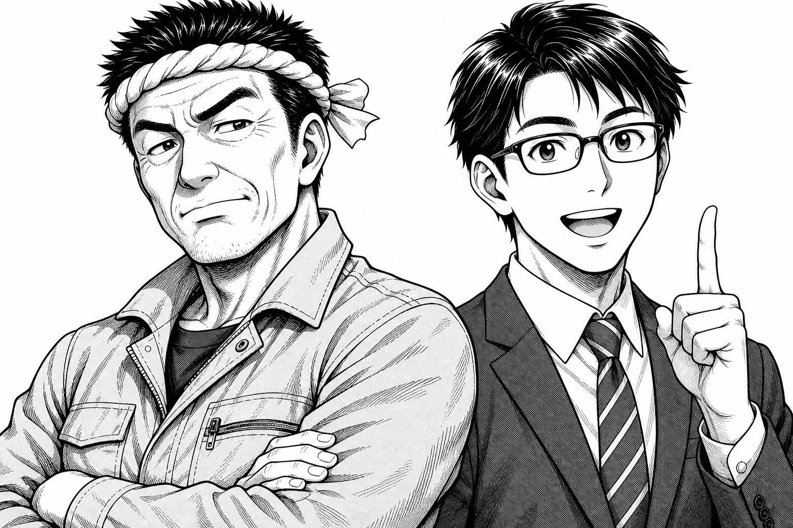

補助金って、
ウチには関係ないでしょ！？
よくある社長の疑問に、中小企業診断士がトーク形式でお答えします。読むのにかかるのは約3分です。
町工場の社長従業員5名・金属加工
中小企業診断士ベルテックジャパン
とある平日の昼、工場の事務所にて——
社長
補助金って、どうせウチみたいな小さい会社は無理でしょ？
ドン!
診断士
いえいえ、むしろ小さい会社のための制度なんです。実は従業員5人以下でも最大750万円の補助が受けられます。
解説コマ 01
従業員数別・補助上限額のめやす
| 従業員数 | 補助上限額 |
|---|
| 5人以下 | 750万円 |
| 6〜20人 | 1,500万円 |
| 21〜50人 | 3,000万円 |
| 51〜100人 | 5,000万円 |
| 101人以上 | 8,000万円 |
賃上げ特例
大幅な賃上げに取り組む場合、上限は最大1億円まで引き上げの対象になります。
※ 中小企業省力化投資補助金（一般型）の例。制度・回次により金額や要件は変わります。
診断士
お気持ちは分かります（笑）。でも国の正式な制度です。設備費用の1/2〜2/3が補助されます。ただし誰でももらえるわけではなく、審査があります。
解説コマ 02
2,000万円の機械なら、こう戻ってくる
補助金（1/2の場合）
1,000万円
後から戻ってくる
実質負担は半分に。補助率2/3が適用される場合、負担はさらに小さくなります。
※ 補助率・上限は制度や企業規模により異なります。補助金は原則「後払い（精算払い）」です。
社長
でもさ、手続き面倒なんでしょ。書類とか苦手なんだよ。
キリッ
診断士
そこは私たちの出番です。計画書づくりは私たちが伴走します。当社支援の採択率は96%です。※ 中小企業省力化投資補助金（一般型）第1〜4回の当社支援実績。将来の採択をお約束するものではありません。
ここ重要!
診断士
いま第8回が募集中です。受付は2026年9月中旬、締切は10月中旬（予定）。ひとつだけ注意点——機械の発注は採択決定の後です。先に買ってしまうと対象外になります。
解説コマ 03
申請から入金までの流れ（第8回のめやす）
-
いま（2026年8月）
無料相談・計画づくりスタート現在地
現状のヒアリングと、対象になりそうな設備の整理から始めます。
-
2026年9月中旬
第8回 申請受付開始
電子申請（GビズID）で提出。書類準備は受付前に済ませておきます。
-
2026年10月中旬（予定）
申請締切
締切直前は駆け込みが集中します。余裕を持った準備が安心です。
-
採択発表後
交付決定 → 機械を発注
発注・契約は必ずこのタイミング以降。導入・支払い・実績報告へ進みます。
-
実績報告の確認後
補助金の入金
かかった経費を精算するかたちで、補助金が振り込まれます。
ここだけは要注意：採択決定前に発注・契約した設備は補助対象外です。「見積までOK・発注はNG」と覚えてください。
※ スケジュールは2026年8月時点の公表情報にもとづく予定です。変更される場合があります。
診断士
かんたんです。LINEで「無料補助金診断」と送ってください。30秒で終わります。御社が対象になりそうか、まず無料でお調べします。
FREE CHECK
無料補助金診断はこちら
LINEで「無料補助金診断」と送るだけ。
従業員数と業種がわかれば、対象になりそうな制度をお調べします。
LINEで「無料補助金診断」と送る
相談は無料です。しつこい営業は行いません。